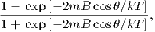
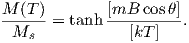
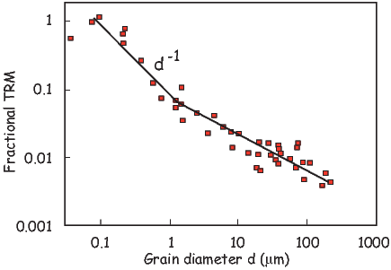

BACKGROUND: read Widom (2002), Chapter 1.
The key to the acquisition of magnetic remanence is magnetic anisotropy energy,
the dependence of magnetic energy on direction of magnetization within the
crystal ( see Chapter 4). It is magnetic anistotropy energy that controls the
probability of magnetic grains changing their moments from one easy
direction to another. Without it, the magnetic moments of individual grains
would swing freely and could not retain a “memory” of the ancient field
direction.
Anisotropy energy controls relaxation time, a concept briefly introduced in
Chapter 4 where we defined it as a time constant for decay of the magnetization
of an assemblage of magnetic grains when placed in a null field. Equation 4.10
predicted exponential decay with relaxation time τ being the time it
takes for the initial magnetization to decay to 1∕e of its initial value.
Relaxation time reflects the probability of magnetic moments jumping over the
anisotropy energy barrier between easy axes. Therefore, to preserve a
record of an ancient geomagnetic field, there must be a way that the
relaxation time changes from short (such that the magnetization is in
equilibrium with the ambient geomagnetic field) to long (such that the
magnetization is “frozen”, or blocked, for geologically significant periods of
time).
Before we begin a more detailed look at the processes governing remanence
acquisition, it is helpful to review briefly what is meant by “equilibrium” in
physics and chemistry. Eager students are encouraged to read the background
material recommended in the “BACKGROUND” list at the beginning of the
chapter. In the following, we will go through the bare bones of statistical
mechanics necessary to understand natural remanence.
We live in a world that is in constant motion down to the atomic level. The state
of the things is constantly changing, but, looking at the big picture, things
often seem to stay the same. Imagine for a moment a grassy field full of
sheep and a fence running down the middle. The sheep can jump over the
fence at will to get flowers on the other side and occasionally they do
so. Over time, because the two sides of the fence are pretty much the
same, the same number of sheep jump over in both directions, so if you
were to count sheep on either side, the numbers would stay about the
same.
Now think about what would happen if it were raining on one side of the fence.
The sheep would jump more quickly back over the fence from the rainy side to
the sunny side than the other way around. You might find that over time, there
were more sheep on the sunny side than on the rainy side (see Figure 7.1). If you
are still awake after all this sheep counting, you have begun to understand the
concept of dynamic equilibrium.
Returning to magnetism, a magnet with uniaxial anisotropy in the absence of a
magnetic field will tend to be magnetized in one of several possible “easy”
directions (see Chapter 4). For the purpose of this discussion, let us consider the
case of uniaxial anisotropy, in which there are only two easy directions in each
magnetic grain. In order to “jump over the fence” (the anisotropy energy) and
get from one easy axis to another, a magnetic particle must have thermal
energy in excess of the anisotropy energy. According to the Boltzmann
distribution law, the probability of a given particle having an energy E is
proportional to e-E∕kT where kT is the thermal energy (see Chapter
4). Therefore, it may be that at a certain time, a particular magnetic
grain has enough thermal energy for the electronic spins to overcome the
energy barrier and flip the sense of magnetization from one easy axis to
another.
If we had a collection of magnetized particles with some initial statistical
alignment of moments giving a net remanence Mo, (more sheep on one side than
the other), the random “fence jumping” by magnetic moments from one easy axis
to another over time will eventually lead to the case where there is no
preference and the net moment will have decayed to zero (although the
individual grain moments remain at saturation). This approach to equilibrium
magnetization (Me) is the theoretical underpinning of Equation 4.10
(plotted in Figure 7.2a) and is the essence of what is known as Néel
Theory.
The theoretical basis for how ancient magnetic fields might be preserved was
established over fifty years ago with the work of Nobel prize winner Louis Néel
(1949, 1955). In the introduction to this chapter, we suggested that the
mechanism which controls the approach to magnetic equilibrium is relaxation
time. In the sheep analogy this would be the frequency of fence jumping. We
defined relaxation time by Equation 4.11 in Chapter 4, sometimes called the
Néel equation, which relates τ to volume v, the anisotropy constant (K) and
absolute temperature (T).
Relaxation time is controlled by the competition between anisotropy
energy Kv and thermal energy, so will be constant at a given temperature
with constant Kv. Iso-τs of equal relaxation time are curves in v - K
space. Figure 7.2b shows the family of curves with τs ranging from ~100
seconds to the age of the Earth. The inset to Figure 7.2b illustrates
the effect of temperature on the iso-τs, which move up and to the right
with increasing temperature. This behavior gives us a clue as to how a
rise in temperature could change a “blocked” remanence at 0∘C (273K)
(one that is stable for long periods of time) to an unblocked one. In fact,
Figure 7.2b (and the inset) suggests two other ways of manipulating the
approach to equilibrium besides temperature: by changing the time span of
observation and by changing grain volume. Each of these mechanisms
represents a different mode of remanence acquisition (thermal, viscous, and
chemical remanences respectively). Naturally acquired remanences are
generally referred to as natural remanent magnetizations or NRMs. In this
chapter we will introduce these and other forms of NRM and how they
are acquired. We will also introduce useful unnatural remanences where
appropriate.
In the “sheep in the rain” scenario, jumping over the fence into the sun would
occur more frequently than jumping into the rain. It is also true that the energy
barrier for magnetic particles to flip into the direction of the applied field H
requires less energy than to flip the other way, so relaxation time must also be a
function of the applied field. This tendency is reflected in the more general form
of the Néel equation:
![τ = -1 exp [Kv-][1 - H-]2.
C [kT ] Hc](WebBook3177x.png) | (7.1) |
In this chapter we are concerned mainly with magnetic remanences acquired in
the presence of the Earth’s magnetic field, which is tiny compared to the
coercivity of the minerals in question and so we can neglect the effect of H on τ
in the next few sections.
In Equation 7.1, the product Kv is an energy barrier to the rotation of m and
we will call it the blocking energy. High blocking energies will promote more
stable magnetizations. We learned in Chapter 4 that K for uniaxial shape
anisotropy, Ku, is related to the coercivity Hc (the field required to flip the
magnetization) by:

where Ms is the saturation magnetization. Substituting for Ku in Equation 4.11
from Chapter 4 we get:
where Ms is itself a strong function of temperature (see, e.g., Figure 3.8 in
Chapter 3). We can see from Equation 7.2 that relaxation time is a function of
magnetization, as well as volume, coercivity and temperature, properties that we
will return to later in the chapter and in future chapters through out the
course.
It is instructive to plot distributions of grains on the v - K diagrams as
shown in Figure 7.3b. By definition, superparamagnetic grains are those
grains whose remanence relaxes quickly. A convenient critical relaxation
time, for purposes of laboratory experiments may be taken as ~100 s.
Effective paleomagnetic recorders must have relaxation times on the order of
geological time. So it might be more appropriate to choose τs of the
age of the Earth (4.5 Gyr) as the relevant relaxation for geological time
scales.
We will now consider various mechanisms by which rocks can become
magnetized. The first mechanism, viscous remanent magnetization, is simply a
consequence of Equation 4.11 in Chapter 4 and Figure 7.2a. Later, we will
explore the role of temperature and grain volume in blocking of thermal and
chemical remanences. We will finish this chapter with other remanences which
are either rare or non-existent in nature but are nonetheless useful in
paleomagnetism.
Placing a magnetic particle at an angle θ to an external magnetic field results in
a magnetostatic energy Em of -m ⋅ B = -mB cosθ, which is at a minimum
when the moment is aligned with the field (see Chapters 1 and 5). Given an
arbitrary θ, the difference in Em between the two easy directions is given
by:
Because of the energy of the applied field Em, the energy necessary to flip the
moment from a direction with a high angle to the external field to the
other direction with a lower angle is less than the energy necessary to flip
the other way around. Therefore, a given particle will tend to spend
more time with its moment at a favorable angle to the applied field than
in the other direction. Moreover, the Boltzmann distribution law tells
us that the longer we wait, the more likely it is for a given magnetic
grain to have the energy to overcome the barrier and flip its moment.
That is why over time the net magnetization of assemblages of magnetic
particles will tend to grow (or decay) to some equilibrium magnetization
Me.
We can visualize what happens in Figure 7.3b. Let us place an assemblage of
magnetic grains with some initial magnetization Mo in a magnetic field. At a
given time span of observation (τ), particles with that relaxation time are likely
to have sufficient energy to overcome the energy barriers. In a given
assemblage of blocking energies (shown as the contours), some grains will be
tending toward equilibrium with the external field (those to the left and
below the blocking energy line) while some will tend to remain fixed
(those to the right of the line). As the time span of observation increases,
the critical blocking energy line migrates up and to the right (moving
from 100 s, to 1 Myr, and so on) and whatever initial magnetic state the
population was in will be progressively re-magnetized in the external
field.
In Figure 7.4 we consider a few different scenarios for Mo and the applied field.
First, the already familiar case when a specimen with a net magnetization (Mo)
is placed in zero external field; the magnetization will decay to zero as in
Figure 7.4a. Conversely, if a specimen with zero initial remanence is put into a
magnetic field, the magnetization M(t) will grow to Me by the complement of
the decay equation:
 | (7.4) |
as shown in Figure 7.4b. The magnetization that is acquired in this isochemical,
isothermal fashion is termed viscous remanent magnetization or VRM
and the equilibrium magnetization Me is a function of the external field
B.
The general case, in which the initial magnetization of a specimen is nonzero and
the equilibrium magnetization is of arbitrary orientation to the initial remanence,
the equation can be written as:
which grows (or decays) exponentially from Mo → Me as t →∞. The rate is not
only controlled by τ, but also by the degree to which the magnetization is out of
equilibrium (see Figure 7.4c).
Some temporally short data sets appear to follow the relation M(t) ∝ log(t) and
Néel (1949, 1955) suggested that VRM = S log t. Such a relationship suggests
infinite remanence as t →∞, so cannot be true over a long period of time. S log t
behavior can generally only be observed over a restricted time interval and
closely spaced, long-term observations do not show linear log(t)-behavior, but
are all curved in log(t) space. When under-sampled, these time series
can appear segmented, leading to interpretations of several quasi-linear
features (multiple values of S), when in fact the time series are not linear at
all.
VRM is a function of time and the relationship between the remanence vector
and the applied field. When the relaxation time is short (say a few hundred
seconds), the magnetization is essentially in equilibrium with the applied
magnetic field hence is superparamagnetic. Because relaxation time is also a
strong function of temperature, VRM will grow more rapidly at higher
temperature. As noted in Chapter 4 there is a very sharply defined range of
temperatures over which τ increases from geologically short to geologically long
time scales. In the next section, we consider the magnetization acquired by
manipulating relaxation time by changing temperature: thermal remanent
magnetization (TRM).
The v -K diagram shown in Figure 7.5 illustrates how TRM can be blocked. In
Figure 7.5a we have a population of magnetic grains with varying volumes and
anisotropies. Raising temperature works in two ways on these grains. First, the
relaxation time depends on thermal energy, so higher temperatures will result
in lower blocking temperatures. Second, anisotropy energy depends on
the square of magnetization (Chapter 4). Elevated temperature reduces
magnetization, so the anisotropy energy will be depressed relative to
lower temperatures. In the diagram, this means that not only do the
relaxation time curves move with changing temperature, but the anisotropy
energies of the population of grains change as well. This means that a
population of grains that are superparamagnetic at high temperature
(Figure 7.5a) could be “blocked” as cooling causes the grains to “walk”
through the superparamagnetic threshold into a region of magnetic stability
(Figure 7.5b).
The key to Néel theory is that very small changes in conditions (temperature,
volume, anisotropy energy) can result in enormous changes in relaxation time. In
order to work out how relaxation time varies with temperature, we need to know
how saturation magnetization varies with temperature. We found in Chapter 3
that calculating Ms(T) exactly is a rather messy process. If we take a reasonable
value for γ in Equation 3.11 from the data in Figure 3.8 in Chapter 3 or γ ≃
0.38 and Ms = 480 mAm-1 (from Chapter 6) we can calculate the variation of
relaxation time as a function of temperature for elllipsoidal grains of various
widths using Equation 7.2 (see Figure 7.6). At room temperature, a 25
nm ellipsoid of magnetite (length to width ratio of 1.3:1) would have a
relaxation time of billions of years, while at 300∘C, the grain would be
superparamagnetic.
The sharpness of the relationship between relaxation time and temperature
allows us to define a temperature above which a grain is superparamagnetic and
able to come into magnetic equilibrium with an applied field and below which it
is effectively blocked. The temperature at which τ is equal to a few hundred
seconds is defined as the blocking temperature or Tb. At or above the
blocking temperature, but below the Curie Temperature, a grain will be
superparamagnetic. Cooling below Tb increases the relaxation time sharply, so
the magnetization is effectively blocked and the rock acquires a thermal remanent
magnetization or TRM.
Now let us put some of these concepts into practice. Consider a lava flow which
has just been extruded (Figure 7.7a). Upon meeting the chilly air (or water),
molten lava solidifies quickly into rock. While the rock is above the Curie
Temperature, there is no remanent magnetization; thermal energy dominates the
system and the system behaves as a paramagnet. As the rock cools through the
Curie Temperature of its magnetic phase, exchange energy becomes more
important and the magnetic minerals become ferromagnetic. The magnetization,
however, is free to track the prevailing magnetic field because anisotropy energy
is still less important than the magnetostatic energy. The magnetic grains are
superparamagnetic and the magnetization is in magnetic equilibrium with the
ambient field.
The magnetic moments in the lava flow tend to flop from one easy direction to
another, with a slight statistical bias toward the direction with the minimum
angle to the applied field (Figure 7.7c). Thus, the equilibrium magnetization of
superparamagnetic grains is not fully aligned, but only slightly aligned, and the
degree of alignment is a linear function of the applied field for low fields like the
Earth’s. The magnetization approaches saturation at higher fields (from ~ 0.2 T
to several tesla, depending on the details of the source of anisotropy
energy).
Recalling the energy difference between the two easy axes of a magnetic
particle in the presence of a magnetic field (Equation 7.3), we can estimate
the fraction of saturation for an equilibrium magnetization at a given
temperature. Applying the Boltzmann distribution law to the theory of thermal
remanence, we take ΔE from Equation 7.3 to be 2mB cosθ, and the two states
to be the two directions along the easy axis, one maximally parallel to
and the other antiparallel to the applied field B. The total number of
particles N equals the sum of those aligned maximally parallel n+ and those
aligned maximally antiparallel n-. So from the Boltzmann distribution we
have:

The magnetization of such a population, with the moments fully aligned is at
saturation, or Ms. The strength of magnetization at a given temperature M(T)
would be the net moment or n+ - n-. So it follows that:

With a little work this can be transformed into:

which in turn can be boiled down to:
![M (T) [mB cosθ]
-M----= tanh --[kT-]--.
s](WebBook3191x.png)
Now imagine that the process of cooling in the lava continues. The thermal
energy will continue to decrease until the magnetic anisotropy energy becomes
important enough to “freeze in” the magnetic moment wherever it happens to be.
Thus, as the particles cool through their “blocking” temperatures (Tb), the
moments become fixed with respect to further changes in field and to get the
final magnetization for randomly oriented grains, we integrate over θ
or:
![∫ 90
MT-RM--= tanh [moB--cos-θ]cosθsinθdθ,
Ms 0 [kT ]](WebBook3192x.png) | (7.6) |
where mo is the grain moment at the blocking temperature.
We show the theoretical behavior of TRM as a function of applied field for
different assemblages of particles in Figure 7.8a. This plot was constructed
assuming ellipsoidal particles whose saturation magnetization varied according to
Equation 3.11 from Chapter 3 with γ = 0.38. For small, equant particles, TRM
is approximately linear with applied field for values of B as small as the Earth’s
(~ 20-65 μT). However, the more elongate and the larger the particle, the more
non-linear the theoretically predicted TRM behaves. This non-linear behavior has
been experimentally verified by Selkin et al. (2007) for geologically important
materials (see Figure 7.8b).
The exact distribution of blocking temperatures depends on the distribution of
grain sizes and shapes in the rock and is routinely determined in paleomagnetic
studies. By heating a rock in zero field to some temperature T, grains with
relaxation times that are superparamagnetic at that temperature become
randomized, a process used in so-called thermal demagnetization which will be
discussed further in Chapter 9. Thermal demagnetization allows us to determine
the portion of TRM that is blocked within successive blocking temperature
intervals. A typical example is shown in Figure 7.9. The total TRM can
be broken into portions acquired in distinct temperature intervals. The
portion of TRM blocked in any particular blocking temperature window is
referred to as partial TRM, often abbreviated pTRM. Each pTRM is a
vector quantity, and for single domain remanences, the total TRM is
the vector sum of the pTRMs contributed by all blocking temperature
windows:

According to Néel theory for single domains, individual pTRMs depend only on
the magnetic field during cooling through their respective blocking temperature
intervals and are not affected by magnetic fields applied during cooling through
lower temperature intervals. This is the law of additivity of pTRM. Another
useful feature of pTRMs in single domain grains is that their blocking
temperatures are the same as the temperature at which the remanence is
unblocked, the so-called unblocking temperature (Tub). This is the law of
reciprocity. While it may seem intuitively obvious that Tb would be the same as
Tub, it is actually only true for single domain grains and fails spectacularly for
multi-domain grains and even grains whose remanences are in the vortex
state.
As an example of the laws of additivity and reciprocity of pTRM, again consider
our lava flow. It originally cooled to produce a TRM that is the vector sum of all
pTRMs with Tb distributed from Tc to room temperature. If the magnetic field
was constant during the original cooling, all pTRMs would be in the same
direction. Now consider that this rock is subsequently reheated for even a short
time to a temperature, Tr, intermediate between room temperature and the
Curie temperature and then cooled in a different magnetizing field. All pTRMs
with Tub < Tr will record the new magnetic field direction. However, neglecting
time-temperature effects to be considered later, the pTRMs with Tub > Tr will
retain the TRM record of the original magnetizing field. This ability to strip
away components of magnetization held by grains with low unblocking
temperatures while leaving the higher Tub grains unaffected is a fundamental
element of the thermal demagnetization technique to be discussed in later
chapters.
Perhaps the most severe simplification in the above model of TRM acquisition is
that it considers only single-domain grains. Given the restricted range of grain
size and shape distributions for stable SD grains of magnetite or titanomagnetite
(see Chapter 4), at most a small percentage of grains in a typical igneous rock
are truly SD. The question then arises as to whether larger grains can acquire
TRM.
Figure 7.10 shows the particle size dependence of TRM acquired by magnetite in
a magnetizing field 100 μT. Note that it is a log-log plot and efficiency of TRM
acquisition very low in the grain-size range from 1 μm to about 10 μm. However,
grains in 1-2 μm range do acquire TRM that can be stable against time decay
and against demagnetization by later magnetic fields. This observation is the
source of the term pseudo-single domain (PSD; see also Chapter 5) which
characterizes the behavior of grains that are too large to be truly single
domain, yet do exhibit stability unexpected for grains with domain walls
(MD grains). The physics of PSD grains is much more complicated than
for SD grains and is not fully understood (see Section 5.3 for a brief
discussion.)
For grains larger than a few microns, the acquisition of TRM is very inefficient.
In addition, TRM in these larger grains can be quite unstable; they are prone to
acquire viscous magnetization. SD and PSD grains are the effective carriers of
TRM, while larger MD grains are likely to carry a component of magnetization
acquired long after original cooling.
Rapidly cooled volcanic rocks generally have grain-size distributions with a major
portion of the distribution within SD and PSD ranges. Also deuteric oxidation of
volcanic rocks can produce intergrowth grains with effective magnetic grain size
less than the magnetic grains that crystallized from the igneous melt. Thus,
volcanic rocks are commonly observed to possess fairly strong and stable TRM.
A typical intensity of TRM in a basalt flow is 1 Am-1. Because grain size
depends in part on cooling rate of the igneous body, rapidly cooled extrusive
rocks are frequently preferable to slowly cooled intrusive rocks. However,
exsolution processes can break what would have been unsuitable MD magnetic
grains into ideal strips of SD-like particles (see Chapter 6) so there is no
universal rule as to which rocks will behave in the ideal single domain
manner.
Equation 7.2 shows that blocking energy depends on volume. This means that
relaxation time could change from very short to very long by increasing the size
of the grain (see Figure 7.11). Chemical changes that form ferromagnetic
minerals below their blocking temperatures which then grow in a magnetizing
field result in acquisition of a chemical remanent magnetization or Chemical
reactions involving ferromagnetic minerals include a) alteration of a pre-existing
mineral (possibly also ferromagnetic) to a ferromagnetic mineral CRM. alteration
chemical remanence aCRM or b) precipitation of a ferromagnetic mineral from
solution. This section outlines a model of CRM acquisition that explains the
basic attributes of this type of grain-growth CRM (gCRM).
Magnetic mineralogy can change after a rock is formed in response to changing
chemical environments. Red beds (see Figure 7.12a), a dominant sedimentary
facies in earlier times, are red because pigmentary hematite grew at some
point after deposition. Hematite is a magnetic phase and the magnetic
remanence it carries when grown at low temperatures is an example of
gCRM.
Magnetite is an example of a magnetic phase which is generally out of chemical
equilibrium in many environments on the Earth’s surface. It tends to oxidize to
another magnetic phase (maghemite) during weathering. As it changes
state, the iron oxide may change its magnetic moment, acquiring an
aCRM.
The relationship of the new born CRM to the ambient magnetic field can be
complicated. It may be largely controlled by the prior magnetic phase whence it
came, it may be strongly influenced by the external magnetic field, or it may be
some combination of these factors. We will begin with the simplest form of CRM
– the gCRM.
Inspection of Equation 7.2 for relaxation time reveals that it is a strong function
of grain volume. A similar theoretical framework can be built for remanence
acquired by grains growing in a magnetic field as for those cooling in a magnetic
field. As a starting point for our treatment, consider a non-magnetic porous
matrix, say a sandstone. As ground water percolates through the sandstone, it
begins to precipitate tiny grains of a magnetic mineral (Figure 7.12c). Each
crystal is completely isolated from its neighbors. For very small grains, the
thermal energy dominates the system and they are superparamagnetic. When
volume becomes sufficient for magnetic anisotropy energy to overcome the
thermal energy, the grain moment is blocked and can remain out of equilibrium
with the magnetic field for geologically significant time periods. Keeping
temperature constant, there is a critical blocking volume vb below which a
grain maintains equilibrium with the applied field and above which it
does not. We can find this blocking volume by solving for v in the Néel
equation:
The magnetization acquired during grain growth is controlled by the
alignment of grain moments at the time that they grow through the blocking
volume. Based on these principles, CRM should behave very similarly to
TRM.
There have been a few experiments carried out with an eye to testing the grain
growth CRM model and although the theory predicts the zeroth order results
quite well (that a simple CRM parallels the field and is proportional to it in
intensity), the details are not well explained, primarily because the magnetic field
affects the growth of magnetic crystals and the results are not exactly
analogous to TRM conditions (see e.g. Stokking and Tauxe, 1990a.)
Moreover, gCRMs acquired in changing fields can be much more complicated
than a simple single generation, single field gCRM (Stokking and Tauxe,
1990b).
Alteration CRM can also be much more complicated than simple gCRM in a
single field. Suffice it to say that the reliability of CRM for recording
the external field must be verified (as with any magnetic remenance)
with geological field tests and other techniques as described in future
chapters.
Sediments become magnetized in quite a different manner from igneous bodies.
Detrital grains are already magnetized, unlike igneous rocks which crystallize
above their Curie temperatures. Magnetic particles that can rotate freely will
turn into the direction of the applied field just as compass needles do. The net
magnetization of such particles, if locked in place can result in a depositional
remanent magnetization (DRM). Sediments are also subject to post-depositional
modification through the action of organisms, compaction, diagenesis and the
aquisition of VRM all of which will affect the magnetization. This magnetization
is usually called post-depositional remanent magnetization or pDRM. In the
following, we will consider the syn-depositional processes of physical
alignment of magnetic particles in viscous fluids (giving rise to the primary
DRM).
The theoretical and experimental foundation for DRM is less complete than for
TRM. Placing a magnetic moment m in an applied field B results in a torque Γ
on the particle Γ = m×B = mB sinθ, where θ is the angle between the moment
and the magnetic field vector. In a fluid like water, the torque is opposed by the
viscous drag and inertia so the equation of motion governing the approach to
alignment is:
 | (7.8) |
where λ is the viscosity coefficient opposing the motion of the particle through
the fluid and I is the moment of inertia. Neglecting the inertial term
(which is orders of magnitude less important that the other terms) we
have:
where θo is the initial angle between m and B (Nagata, 1961). By setting
λ = 8πr3η where r is the particle radius and η to the viscosity of water (~ 10-3
kg m-1s-1), the time constant ϒ of Equation 7.9 over which an inital θo reduces
to 1∕e of its value would be:
where M is the volume normalized magnetization.
Plugging in reasonable values for η,M and B and assuming isolated magnetic
particles yields a time constant that is extremely short (microseconds). The
simple theory of unconstrained rotation of magnetic particles in water as
developed by Nagata (1961) predicts that sediments with isolated magnetic
particles should have magnetic moments that are fully aligned and insensitive to
changes in magnetic field strength; DRM should be at saturation. Yet even from
the earliest days of laboratory redeposition experiments (e.g., Johnson et al.,
1948; see Figure 7.13a) we have known that depositional remanence (DRM) can
have a strong field dependence and that DRMs are generally far less than
saturation remanences (~0.1%). Much of the research on DRM has focussed on
explaining the strong field dependence observed for laboratory redepositional
DRM.
The observation that DRM is usually orders of magnitude less than saturation
and that it appears to be sensitive to changing geomagnetic field strengths
implies that the time constant of alignment is much longer than predicted by
Equation 7.10. Either there is a disruption of alignment by some mechanism, or
we have underestimated ϒ somehow.
Collinson (1965) invoked Brownian motion to disrupt alignment. Reasonable
parameter assumptions suggest that particles smaller than about 100 nm could
be affected by Brownian motion suggesting a possible role in DRM of isolated
magnetite grains free to rotate in water. The problem with this suggestion is that
such small particles take an extremely long time to settle. Also, in almost all
natural waters, magnetite particles will adhere to clay particles making
isolated magnetic particles in nature unlikely (see, e.g., Katari et al.,
2000).
To increase ϒ, one can either assume a larger viscosity than that of pure water,
or decrease magnetization. by for example, using values for M much lower than
the saturation magnetizations of common magnetic minerals (e.g., Collinson,
1965) or padding the magnetic particles with non-magnetic “fluff” through the
process of flocculation (Shcherbakov and Shcherbakova, 1983). Using the
viscosity in the sediment itself in Equation 7.10 fails to explain laboratory
remanences that are demonstrably “fixed” after settling – the viscosity of the
mud appears to be too high to allow post-depositional re-alignment, yet these
sediments exhibit field dependence (e.g., Tauxe et al., 2006). Alternatively,
one could increase ϒ by assuming a reduce value for M. However, even
using the magnetization of hematite, which is two orders of magnitude
lower than magnetite, results in values for ϒ that are still less than a
second.
In saline environments, sedimentary particles tend to flocculate. For magnetic
particles embedded in a non-magnetic matrix, the magnetic field must turn the
entire particle and the net magnetization of the floc must be used in
Equation 7.10.
The tendency to flocculate increases with increasing salinity. There are therefore
two completely different systems when discussing DRM: ones in which magnetic
particles remain essentially isolated or embedded in very small flocs (e.g., in
freshwater lakes; see Figure 7.14a) and ones in which flocculation plays a role
(e.g., marine environments; see Figure 7.14b). For the case of magnetite in
freshwater, Brownian motion may reduce DRM efficiency and give rise to
the dependence on B. In saline waters, however, the most important
control on DRM is the size of the flocs in which the magnetic particles are
embedded. In the following we briefly explore these two very different
environments.
In freshwater we expect to have relatively unflocculated particles whose
magnetic moments are presumably a saturation remanence. Although,
even in fresh water, the magnetic particles are likely to be attached to
clays through van der Waals attraction the clays themselves have no
great mutual attraction. It is possible, therefore that magnetic particles
could be subject to Brownian motion. Here we outline the theory to
investigate the behavior of DRM that would be expected from a Brownian
motion mechanism (henceforth a Brownian remanent magnetization or
BRM).
To estimate the size of particles affected by Brownian motion, Collinson (1965)
used the equation:
 | (7.11) |
where ϕ is the Brownian deflection about the applied field direction (in radians),
k is Boltzmann’s constant (1.38 x 10-23JK-1) and T is the temperature in
kelvin. The effect of viscous drag on particles may also be important when the
magnetic moments of the particles are low (see Coffey et al., 1996 for a complete
derivation), for which we have:

where δ is the time span of observation (say, 1 second). According to this
relationship, weakly magnetized particles smaller than about a micron will be
strongly affected by Brownian motion. Particles that have a substantial magnetic
moment however, will be partially stabilized (according to Equation 7.11) and
might remain unaffected by Brownian motion to smaller particle sizes (e.g., 0.1
μm). In the case of isolated particles of magnetite, therefore, we should use
Equation 7.11 and BRM should follow the Langevin equation for paramagnetic
gases, i.e.:
 | (7.12) |
Here the quantity sIRM is a saturation isothermal remanence (Mr in Chapter 5)
and is the moment acquired when all the magnetic particles are aligned to the
maximum extent possible. To get an idea of how BRMs would behave, we first
find m from M(r) [here we use the results from micromagnetic modeling (see
Chapter 4)]. Then, we evaluate Equation 7.12 as a function of B for a given
particle size (see Figure 7.15a). We can also assume any distribution of particle
sizes (e.g, that shown as the inset to Figure 7.15b), and predict BRM/sIRM for
the distribution (blue line in Figure 7.15b). It is interesting to note that BRMs
are almost never linear with the applied field unless the particle sizes are very
small.
BRMs are fixed when the particles are no longer free to move. The fixing of this
magnetization presumably occurs during consolidation, at a depth (known as the
lock-in depth) where the porosity of the sediment reduces to the point that the
particles are pinned (see Figure 7.14a). Below that, the magnetization may be
further affected by compaction (e.g., Deamer and Kodama, 1990) and diagenesis
(e.g., Roberts, 1995).
Equation 7.9 predicts that a magnetic moment m making an initial angle θo with
the applied field B will make an angle θ with the field after time t. From
this, we can make a simple numerical model to predict the DRM for
an initially randomly oriented assemblage of magnetic moments, after
time t [or the equivalent settling length l using some settling law (e.g.,
Gibbs 1985; see Katari and Bloxham 2001)]. In Figure 7.16a and b, we
show the DRM curves predicted by Tauxe et al. (2006) for simple flocs
with a single magnetite grain in each as a function of magnetic field and
radius.
In general, the magnetic flocs are either nearly aligned with the magnetic field, or
nearly random with only a narrow band of floc sizes in between the two states for
a given value of B. Increasing B increases the size for which particles can rotate
into the field, giving rise to the dependence of DRM intensity on applied field
strength. Taking a given particle size and evaluating DRM as a function of the
applied field (Figure 7.16b) predicts the opposite behavior for DRM than the
Brownian motion approach (Figure 7.15) in that the larger the floc size, the
weaker the DRM and also the more linear with respect to the applied field.
Brownian motion, therefore, predicts low DRM efficiency for the smallest
particles increasing to near saturation values for particles around 0.1 μm while
composite floc theory predicts decreased DRM efficiency for larger floc
sizes.
The flocculation model of DRM makes specific predictions which can in principle
be tested if the model parameters can be estimated or controlled. Tauxe
et al. (2006) tested the flocculation hypothesis by dispersing natural
sediments in settling tubes to which varying amounts of NaCl had been
introduced. Prior to dispersal, each specimen of mud was given a saturation
remanence. They measured DRM as a function of salinity (and therefore
floc size) and the applied field (see Figure 7.17). In general their results
suggested the following: 1) the higher the salinity, the lower the net moment
and the faster the particles settled, 2) the higher the applied field, the
higher the net moment, although a saturation DRM appeared to be nearly
achieved in the 1 ppt NaCl set of tubes by 30 μT (Figure 7.17), 3) the
relationship of DRM to B was far from linear with applied field in all
cases, and 4) the saturation DRM was less than the saturation IRM so
the simplest idea of one floc/one magnetic particle failed to explain the
data.
In nature, flocs are formed by coalescing of “fundamental flocs” into composite
flocs. Each fundamental floc would have tiny magnetic particles adhering to them
and would have the sIRM imparted prior to settling. As the composite flocs grow
by chance encounters with other flocs, the net moment of the composite floc will
be the vector sum of the moments of the fundamental flocs. Tauxe et al. (2006)
used the composite floc hypothesis to model experimental DRMs (see examples
in Figure 7.17); model predictions were in excellent agreement with the
redeposition data.
It appears that by combining the effects of Brownian motion for non-flocculating
environments and a composite floc model for flocculating environments we are on
the verge of a quantitative physical theory that can account for the acquisition of
depositional remanence near the sediment/water interface. The DRM will be
fixed when no further physical rotation of the magnetic particles in response
to the geomagnetic field is possible. The depth at which moments are
pinned is called the lock-in depth. In the “standard model” of depositional
remanence (DRM) acquisition (see, e.g., Verosub, 1977) detrital remanence is
acquired by locking in different grains over a range of depths. This phased
lock-in leads to both significant smoothing and to an offset between the
sediment/water interface and the fixing of the DRM. Many practitioners of
paleomagnetism still adhere to this concept of DRM which stems from the
early laboratory redeposition experiments which were carried out under
non-flocculating conditions, however. As summarized by Tauxe et al. (2006), the
evidence for substantial smoothing and a deep (>10 cm) lock in remains
weak.
Physical rotation of particles in response to compaction can also change the
magnetic remanence. As sediments lose water and consolidate, compaction can
have a strong effect on DRM intensity (e.g., Anson and Kodama, 1987).
Consolidation is a continuous process starting from the sediment water interface
when sedimentary particles first gel (see, e.g., Figure 7.14b) and continuing until
the sediment is completely compacted, perhaps as deep as hundreds of meters.
The effect on magnetic remanence depends on volume loss during compaction
which depends largely on clay content, so clay rich sediments will have the largest
effect.
Other processes not involving post-depositional physical rotation of magnetic
particles including “viscous” (in the sense of magnetic viscosity) remagnetization
and diagenetic alteration resulting in a chemical remanence may also modify the
DRM. All of these processes influence the intensity of remanence and hamper our
efforts to decipher the original geomagnetic signal.
Some sedimentary remanences show a remanence vector that is generally
shallower than the applied field, a phenomenon known as inclination error. We
show the results of a typical laboratory redeposition experiment (Tauxe and
Kent, 1984) in Figure 7.18. The tangent of the observed inclination is usually
some fraction (~ 0.4-0.6) of the tangent of the applied field (King 1955). Thus,
inclination error is at a maximum at 45∘ and is negligible at high and low
inclinations. Tauxe and Kent (1984) also demonstrated a strong link between
DRM efficiency and inclination error. Sediments exhibiting inclination error have
the strongest remanences in horizontal fields and the weakest in vertical
fields.
Interestingly, many natural sediments (e.g. deep sea or slowly deposited lake
sediments) display no inclination error. The worst culprits appear to be
sediments whose NRM is carried by detrital hematite, a flakey particle with a
small saturation remanence.
Examination of the Equations 7.1 and 7.2 reveals an interesting dependence of
relaxation time on the coercivity of magnetic particles. We can coax the
magnetization of otherwise firmly entrenched particles to follow an applied field,
if that field is larger than the coercivity. Exposing a particle to a large magnetic
field, will allow magnetic particles whose coercivity is below that field to flip their
magnetic moments to a direction at a more favorable angle to the applied field,
resulting in a gain in magnetic remanence in that direction. This type of
magnetic remanence is called an isothermal remanent magnetization or IRM (see
Chapters 4 and 5).
IRM is unfortunately a naturally occurring remanence. When lightning strikes in
the neighborhood, rocks can become either partially or entirely remagnetized (see
Figure 7.19). These magnetizations often mask the primary magnetization (TRM
or DRM), but can sometimes be removed.
IRMs can also be useful. The magnitude is sensitive to the magnetic mineralogy,
concentration and grain size and properties of IRMs are used for a variety of
purposes, some of which we will discuss in Chapters 8 and 10. In anticipation of
those chapters, we will briefly introduce some of properties of laboratory acquired
IRMs.
In Figure 7.20 we illustrate the behavior of an initially demagnetized specimen
as it is subjected to increasing impulse fields. The maximum IRM achieved is
known as sIRM (saturation IRM) or Mr (and sometimes Mrs). After
saturation, the specimen can be turned around and subjected to increasingly
large back-fields. The back-field field sufficient to remagnetize half of
the moments (resulting in a net remanence of zero) is the coercivity of
remanence (Hcr or μoHcr depending on the magnetic units). Alternatively, we
could use the magnetic field required to impart an IRM that is half the
intensity of the saturation remanence (H′′′cr). We call this the H1∕2
method.
By now we have encountered four different methods for estimating the coercivity
of remanence (see Table C.1). Each of these requires a monogenetic populations
of grains and will give meaningless numbers if there are several different minerals
or grain size populations in the specimen. The “ascending loop intercept method”
also assumes uniaxial single domain particles. So differences between, for example
the Hcr estimate and Hcr′ could provide clues about departures from that
assumption.
Sometimes rocks are exposed to elevated temperatures for long periods of time
(for example during deep burial). The grains with relaxation times (at the
elevated temperature) shorter than the exposure time may have acquired a
so-called thermo-viscous remanent magnetization (TVRM). To erase this
remanence, the rock must be heated in the laboratory (in zero field) hot enough
and long enough. We cannot wait for geologically meaningful periods of
time, so we must estimate what the effective blocking temperature of the
TVRM component will be on laboratory time scales. To do this, we follow
the logic of Pullaiah et al. (1975). If we hold Hc,Ms and v constant in
Equation 7.2, we could calculate the relationship of τ to temperature
by:
But Hc and Ms are also functions of temperature and a more appropriate
equation would be:
For uniaxial anisotropy, Hc(T) ≃ ΔNMs for magnetite, so Hc varies
linearly with Ms. Exploiting this property, we can simplify Equation 7.13
to:
Now all we need is the variation of saturation magnetiztation with temperature.
As previously noted, this is not perfectly known. However, using the approximate
relationship from Chapter 3 of Ms(T) (γ=0.38 in Equation 3.11 and
assuming Tc = 580∘C as in Chapter 6), we can draw the plot shown in
Figure 7.21a for τ versus Tb. This plot is different in detail from that
of Pullaiah et al. (1975) because of the difference in assumed Ms(T)
behavior.
The theoretical treatment for hematite is different than for magnetite
because the dominant source of anisotropy is either a defect moment or
magnetocrystalline anisotropy, and the relationship of coercivity with temperture
is different than for shape anisotropy. In fact, this relationship for hematite is
very poorly constrained. Pullaiah et al. (1975) assumed Hc(T) ∝ Ms3(T) from
which they derived:
Using experimental values of blocking temperature for hematite, they calculated
nomograms for hematite similar to that shown in Figure 7.21b.
Curves like those shown in Figure 7.21 allow us to predict what the blocking
temperature of a viscous magnetization acquired over many years will be under
laboratory conditions (relaxation times of hundreds of seconds). There are many
assumptions built into the plot shown in Figure 7.21 and some discussion in the
literature (see Dunlop and Özdemir, 1997 for a good summary). Because of the
sensitivity to the Ms(T) behavior and the even more poorly constrained
(at least for hematite) Hc(T) behavior, these plots should be used with
caution.
A rock collected from a geological formation has a magnetic remanence which
may have been acquired by a variety of mechanisms some of which we
have described. The remanence of this rock is called simply a natural
remanent magnetization in order to avoid a genetic connotation in the
absence of other compelling evidence. The NRM is often a combination
of several components, each with its own history. The NRM must be
picked apart and the various components carefully analyzed before origin
can be ascribed. The procedures for doing this are described in later
chapters.
Another way to magnetize rocks (although not in nature) is to subject a sample
to an alternating field (see Figure 7.22). Particles whose coercivity is lower than
the peak oscillating field will flip and flop along with the field. These entrained
moments will become stuck as the peak field gradually decays below
the coercivities of individual grains. Assuming that there is a range of
coercivities in the sample, the low stability grains will be stuck half along one
direction of the alternating field and half along the other direction; the net
contribution to the remanence will be zero. This is the principle of so-called
alternating field (AF) demagnetization which we will discuss in later
chapters.
If there is a small DC bias field superposed on the alternating field, then there
will be a statistical preference in the remagnetized grains for the direction of the
bias field, analogous to TRM acquired during cooling. This net magnetization is
termed the anhysteretic remanent magnetization or ARM. By analogy to partial
thermal remanence, one can impart a partial anhysteretic remanence (pARM) by
only turning on the DC field for part of the AF cycle (solid blue line in
Figure 7.22). Also, by normalizing the magnetization (volume normalized with
units of Am-1) by the DC field (also converted to Am-1), one has the
dimensionless parameter known as ARM susceptibility (χARM). This parameter
assumes that ARM is linearly related to the inducing field so that χARM is
independent of the applied field. This is of course only true for small DC fields
and may not be true for the fields used in most laboratories (50-100
μT).
A related remanence known as the gyromagnetic remanent magnetization or
GRM is a somewhat mysterious remanence that is acquired by stationary
specimens in moving fields or by rotating specimens in either steady or moving
fields. It is most frequently observed as a component of magnetization acquired
during alternating field demagnetization that is perpendicular to the last axis of
demagnetization. It was originally thought to arise from the gyroscopic response
of SD moments to the torque of an applied field which, in anisotropic
distributions of SD moments resulted in a net moment perpendicular to the
applied field (Stephenson, 1981). But, truly uniaxial single domain particles will
have no net remanence if demagnetized along all three axes, no matter how
anisotropic the distribution of easy axes is. More recently, Potter and
Stephenson (2005) hypothesized that small deviations from the uniaxial
constraint for small acicular magnetic particles could explain the behavior.
They performed experiments on elongate particles of maghemite (1 μm in
length and 0.22 μm in diameter) and confirmed that the non-ideal (not
strictly uniaxial) behavior could explain the GRM. They referred to these
particles as being single domain, and while they may not have had domain
walls, it is likely that such large particles were in fact in the size range
that exhibit vortex remanent states (see Chapter 4). It is therefore likely
that anisotropic distributions of vortex state particles is the cause of
GRM.
SUPPLEMENTAL READINGS: Dunlop and Özdemir (1997), Chapters 8, 10,11,
13.
Problem 1
SD grains of hematite (αFe2O3) are precipitating from solution at a temperature
of 280K. The coercivity is μoHc= 1 T. Use what you need from Table 6.1 from
Chapter 6 and find the diameter of a spherical hematite particle with a
relaxation time of 100 seconds.
Problem 2
In the text, you were given a brief discussion of the time required for a magnetic
grain to become substantially aligned with the magnetic field in a viscous fluid.
For water at room temperature, η is approximately 10-3 m-1 kg s-1. Calculate
the time constant of alignment for saturation values of magnetization for both
magnetite and hematite in water. [HINT: use values listed in Table 6.1 from
Chapter 6.]
Problem 3
Sometimes rocks are exposed to elevated temperatures for long periods of time
(for example during deep burial). The grains with relaxation times (at the
elevated temperature) shorter than the exposure time will have acquired a
so-called thermo-viscous remanence. In order to demagnetize this remanence on
laboratory time scales of, say, 100 seconds, we need to know the blocking
temperature on laboratory time scales.
a) Use the curves in Figure 7.21a to determine the laboratory blocking
temperature of a VRM acquired since the last reversal (0.78 Ma) by a rock
remaining at 20∘ C for magnetite. Do the same for a rock buried for 30 Ma to a
depth at temperature 250∘C.
b) Hydrothermal activity elevates the temperature of a red sandstone to 225∘C
for a time interval of 1000 yr and results in formation of thermoviscous
remanent magnetization (TVRM). If hematite is the exclusive ferromagnetic
mineral in this red sandstone, approximately what temperature of thermal
demagnetization is required to unblock (remove) this TVRM? The time at
maximum temperature during thermal demagnetization is approximately 30
min.
Problem 4
Relaxation time is controlled by saturation magnetization, coercivity, volume and
temperature. Write a program that will draw curves for a given relaxation time
for coercivity (on the X axis) versus grain volume (on the y axis). Plot out curves
for 100 sec, 1 Myr and 1 Gyr for magnetite and for hematite. Use coercivities
from 1 mT to 100 mT.